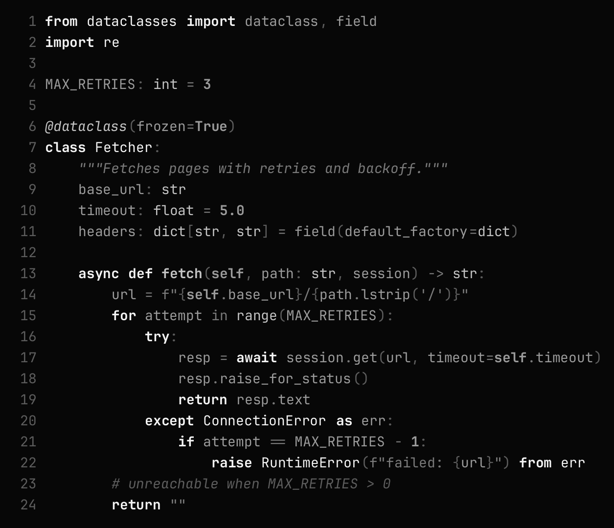
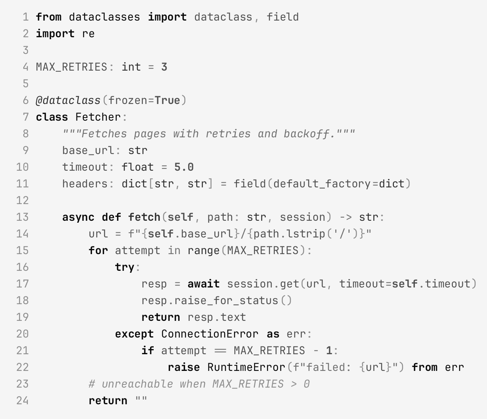
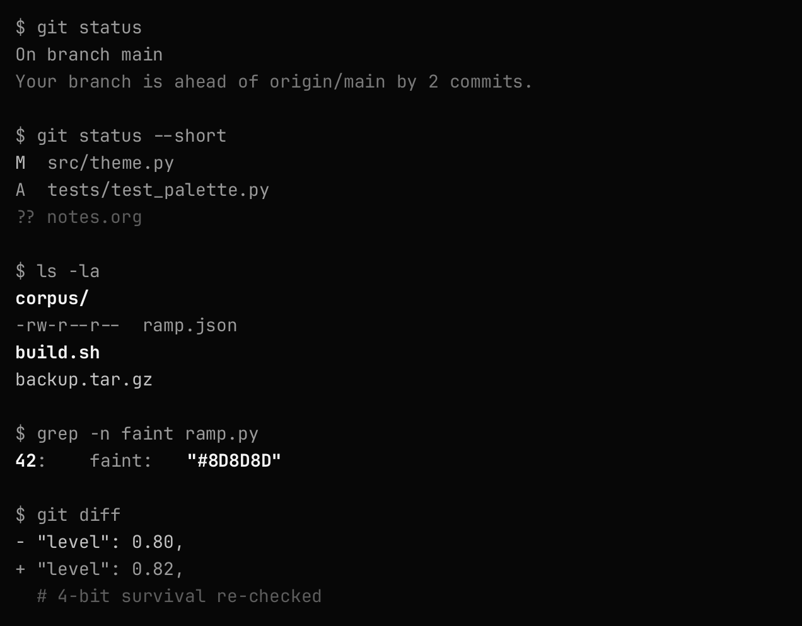
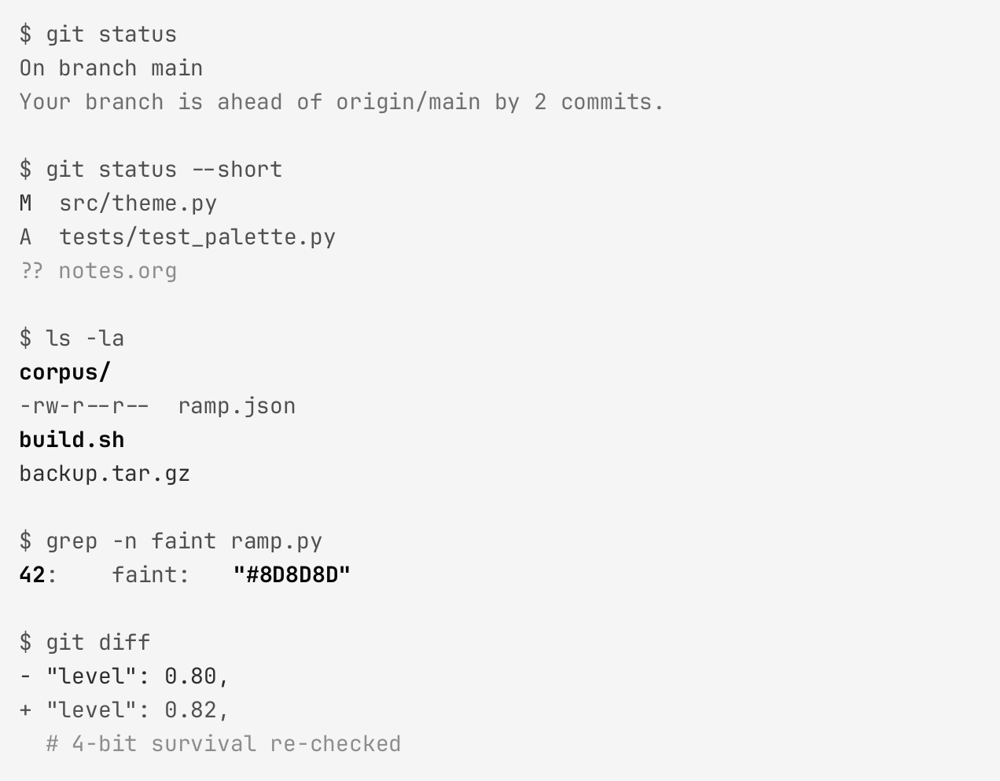
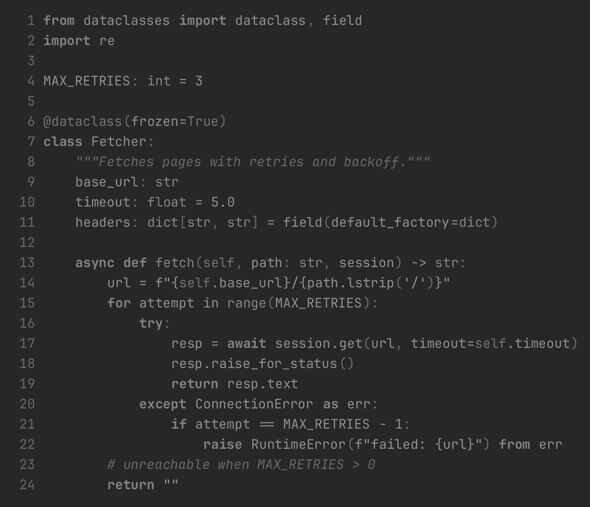

michael
a grayscale theme for grayscale-forced displays — terminal first
Most themes assume color. On a screen forced to grayscale — desktop monitor or phone — color themes collapse: their token distinctions become whatever lightness accidents the original hues had. michael is authored grayscale from the start. Meaning is carried by lightness × weight × style × overlay, never by hue.
Every value is derived from measurable acceptance gates, and the theme is vision-evaluated against Solarized and Flexoki converted to grayscale the same way your display converts everything else.
The ramp
Ten perceptual steps in OKLCH lightness, off-polar endpoints (never pure black/white), five foreground levels per polarity, tuned so adjacent levels stay ≥ 0.10 OKLCH apart — distinguishable even after aggressive quantization.
The grammar
With no hue, each channel carries exactly one kind of meaning — so any token maps by answering three binary questions instead of "pick a gray":
| channel | values | meaning |
|---|---|---|
| level | ink / strong / fg / muted / faint | importance |
| weight | regular / bold | binding — definitions, keywords |
| style | none / italic | kind — comments, parameters, metadata |
| underline | solid / wavy / dotted | diagnostics only: error / warning / info |
| overlay | fill / outline / inverse | selection, brace match, current search |
In the terminal, bold-is-bright doubles the weight channel as a
brightness escape hatch across all 16 ANSI slots.
Showcase




Measured, not vibes
Every hex value must pass acceptance gates before it ships:
| gate | threshold |
|---|---|
| body text contrast | ≥ 7:1 (WCAG AAA) |
| strong / ink levels | ≥ 10:1 |
| muted level | ≥ 4.5:1 |
| de-emphasized level | ≥ 3:1 |
| adjacent level spacing | ≥ 0.10 OKLCH ΔL |
| text on selection | ≥ 4.5:1 |
| 16-gray quantization | all states survive (e-ink floor) |
Against the baselines
Solarized and Flexoki are luminance-preserving grayscaled — exactly what a grayscale-forced display does to them — then graded blind by a vision model on rendered sessions (median of repeated grades, per-class diagnostics).
| theme | terminal separation (0–5) | readability (0–5) |
|---|---|---|
| michael dark | 3.0 | 4.0 |
| flexoki dark | 2.0 | 4.0 |
| solarized dark | 2.0 | 3.0 |
| michael light | 2.0 | 2.0 |
| flexoki light | 1.0 | 2.0 |
| solarized light | 2.0 | 3.0 |
n = 6 images per theme with median-of-3 grading. Full methodology, per-class
diagnostics and the experiment log live in the repository
(corpus/eval-report.md, notes/eval-experiments.org).
Grayscale-forced vs authored-gray

Install
git clone https://github.com/charly-vibes/michael.git
cd michael
uv sync # .venv with pillow, pygments
just install-gnome # terminal profiles + registration
just install-doom # Doom Emacs themes
just install-vscode
just check # rebuild + verify all gates
Targets: GNOME Terminal (16-slot palette + bold-is-bright),
Doom Emacs (doom-michael-light / doom-michael-dark),
VS Code JSON themes.